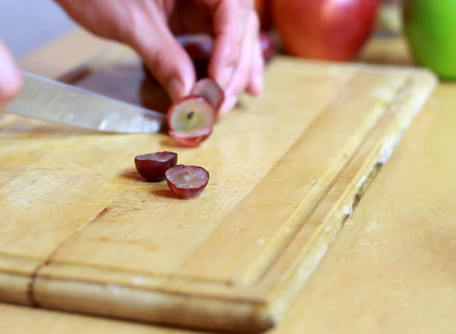

How to Easily Cut Cherry Tomatoes and Grapes
Submitted by Alli Pichette
Grapes and cherry tomatoes are a great snack for little kids, however, due to their size they can be a choking hazard, so it's recommended to cut them in half before giving them to your kid. However, cutting each one in half individually can be a time consuming pain.
Method
- Collect your cherry tomoatoes or grapes, two shallow plates or plastic lids, and a sharp knife.
- Place your cherry tomatoes or grapes on top of the first lid or plate, and then put the second lid or plate on top, essentially sandwiching the grapes and tomatoes.
- Carefully slide the knife horizantally between the two plates.
- Serve to hungry children.